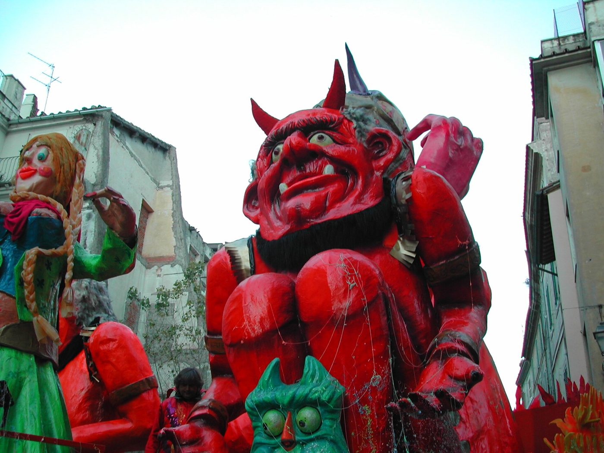
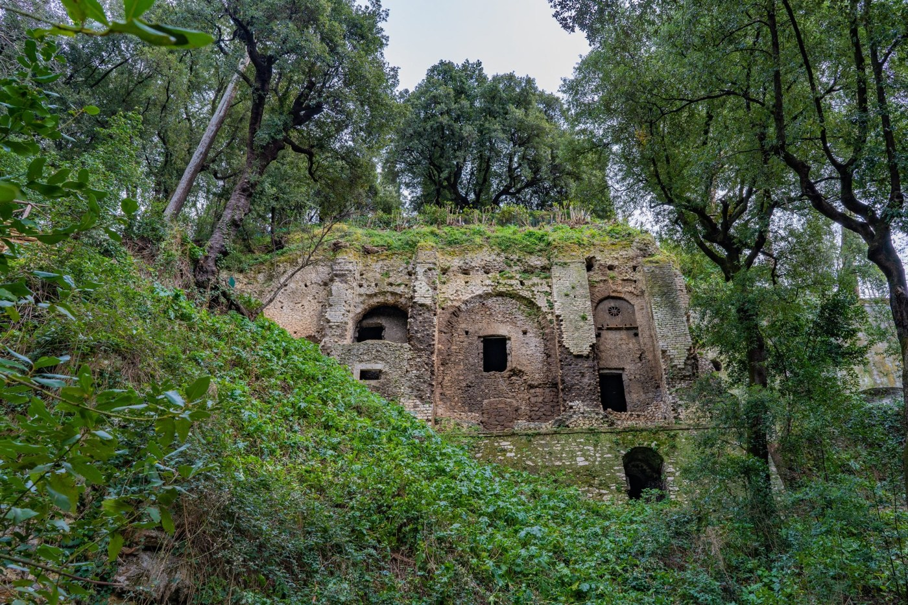
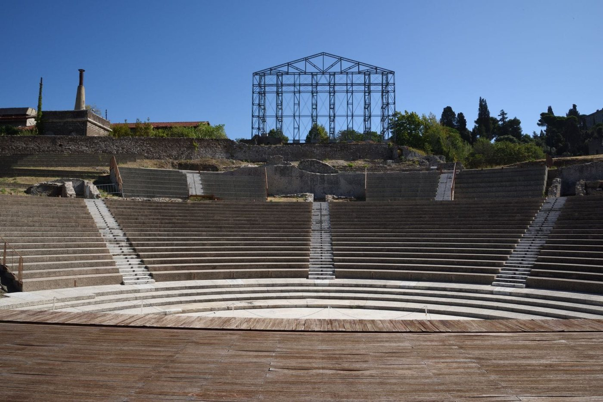
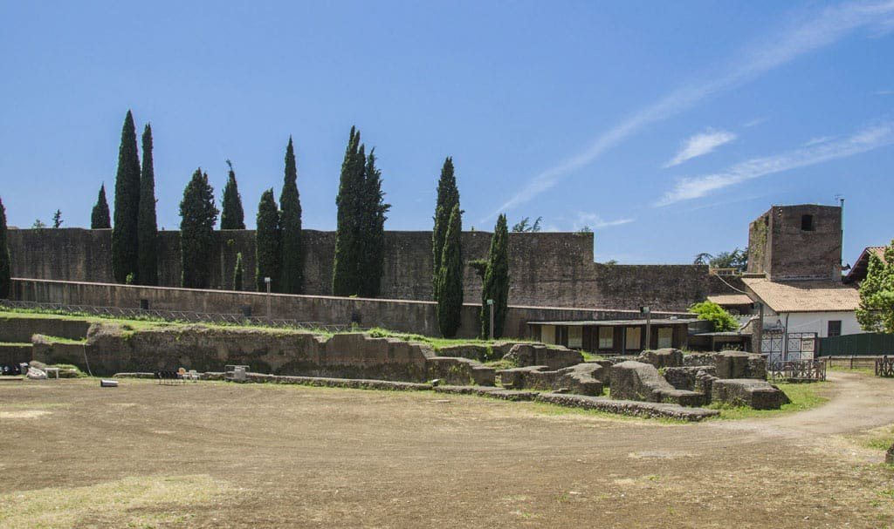

Tivoli
The tournament's home town, in the days of its Carnival.
The venue is the Park Hotel Imperatore Adriano, Via G. Garibaldi 167, Guidonia (Rome), a few minutes from Tivoli. How to get there and where to stay
The tournament bears the name of Tivoli and is held under the patronage of the Municipality. Tivoli, the ancient Tibur, which holds the title of City, stands on the Monti Tiburtini about thirty kilometres from Rome, where the river Aniene comes down to the plain with its waterfalls.
Its territory includes two UNESCO World Heritage sites: those who come for the tournament have three villas and an ancient town to see a few minutes from the playing hall.
The Carnival
Carnival is a big occasion in Tivoli, and the tournament dates are no coincidence: we play on Carnival weekend.
| Fat Thursday (Giovedì grasso) | 4 February 2027 |
| S.V.A. Carnival Chess Trophy | 5 – 7 February 2027 |
| Shrove Tuesday (Martedì grasso) | 9 February 2027 |



The Tivoli Carnival has Renaissance origins: Cardinal Ippolito II d'Este used to invite his noble friends to spend the season of jests at his villa, with masked parties and dancing. The papier-mâché floats arrived after the unification of Italy.
Today the most awaited moment is the parade of floats, which in recent years has crossed the town centre on Sunday afternoon, between Piazzale Matteotti, Viale Aldo Moro and Piazza Garibaldi, with masked groups and marching bands.
In 2025 the Italian Ministry of Culture recognised the Carnival of Tivoli as one of Italy's historic carnivals.
The Tivoli Carnival on Visit Tivoli (in Italian) · The historic Carnival of Tivoli on Visit Lazio · Municipality of Tivoli
Programme and updates also on Facebook: Municipality of Tivoli · Visit Tivoli
To be completed. Official programme of the Tivoli Carnival 2027 with dates and times of the parades, as soon as the Municipality publishes it.
The three villas

Photo by Cezar Suceveanu, Wikimedia Commons, CC BY-SA 4.0 Villa d'Este
The Renaissance villa built for Cardinal Ippolito II d'Este, with its Italian garden and fountains. It is in the centre of Tivoli and has been a UNESCO World Heritage site since 2001.

Photo by Palickap, Wikimedia Commons, CC BY-SA 4.0 Villa Adriana
The residence of the emperor Hadrian, among the most visited archaeological sites in Italy. It lies at the foot of the town and has been a UNESCO World Heritage site since 1999.

Photo: Visit Tivoli, Municipality of Tivoli Villa Gregoriana
A park of woods, paths, caves and waterfalls at the foot of the ancient acropolis, managed by FAI, the Italian National Trust.
Page on Visit Tivoli · Opening times and tickets on the FAI website

.jpg){kind=link}
The ancient and medieval town

Photo by Oursana (cropped), Wikimedia Commons, public domain (CC0) The temples of the Acropolis
The two temples known as the Temple of Vesta and the Temple of the Sibyl, in travertine, overlooking the gorge of Villa Gregoriana. They are among the monuments most often drawn and painted by travellers from the sixteenth to the nineteenth century, and can be seen well from the Ponte Gregoriano.

Photo by LPLT, Wikimedia Commons, CC BY-SA 3.0 Cathedral of San Lorenzo
The Cathedral, dedicated to St Lawrence and documented as early as the 6th century, stands over the ancient Roman Forum. It keeps its Romanesque bell tower; its present appearance dates from the rebuilding of 1625, completed with the portico in 1650.

Photo: Visit Tivoli, Municipality of Tivoli Mensa Ponderaria and Augusteum
Next to the Cathedral, where the Forum of ancient Tibur once opened: the public office of weights and measures, with its two marble tables hollowed out to hold the standard measures, and the shrine dedicated to Augustus. They date from the 1st century AD. It is not always open: check before you go.

Photo: Visit Tivoli, Municipality of Tivoli Sanctuary of Hercules Victor
One of the largest sacred complexes of Roman architecture of the Republican age, built sheer above the Aniene and given its monumental form between the end of the 2nd century BC and 82 BC.

Photo by TivoliTibutino, Wikimedia Commons, CC BY-SA 4.0 Rocca Pia
The fortress built for Pope Pius II Piccolomini, who began work on it in 1461 to control the town and the roads to Rome. It was built partly with materials from the nearby amphitheatre.

Photo: Visit Tivoli, Municipality of Tivoli Amphitheatre of Bleso
The Roman amphitheatre of Hadrian's time, at the foot of the Rocca Pia. Partly demolished in 1461 to build the fortress, it came to light again in 1948.

Photo by Anna Eden 86, Wikimedia Commons, CC BY-SA 4.0 The Casa Gotica and the old town
A late-medieval house of the 12th–13th century, in tufa and travertine, facing Via Campitelli. It is one of the stops in the medieval quarter, to be explored on foot among alleys, squares and tower houses.

Photo by Gianluca Filippi, from Visit Tivoli, Municipality of Tivoli Ponte Lucano and the Mausoleum of the Plautii
The Roman bridge that crosses the Aniene along Via Tiburtina, not far from Villa Adriana, and beside it the tomb of the Plautii family, from the Augustan age.
_2017.2.jpg){kind=link}


.jpg){kind=link}
Find out more
In Tivoli Terme, a few minutes from the hotel, are the Terme di Roma thermal baths, with sulphur waters known since the time of Augustus.
All the places to visit, itineraries and events are on the Municipality's tourism portal: visittivoli.it